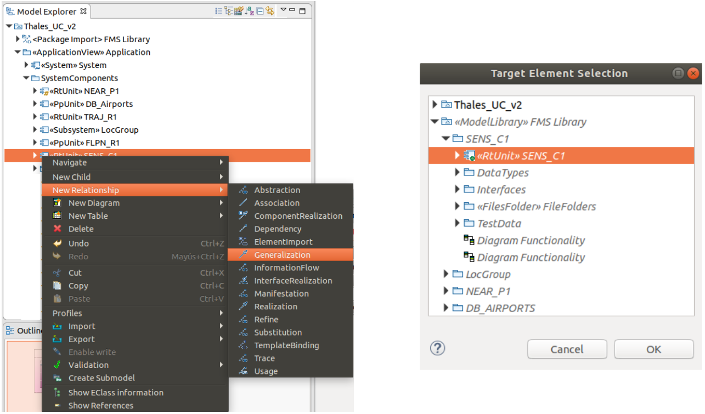

The tool to be used in this User’s Guide is Papyrus, an Eclipse open source Model-Based Engineering tool. Then, the first step is to install Eclipse. The version we are using is Eclipse Neon available from:
The execution of the downloaded file starts an installation wizard opening a window with all the available Eclipse Integrated Development Environments. Among them, select the Eclipse Modeling Tools (EMT):
Figure 1: EMF IDE selection
After installation, the tool can be launched. The first decision is the selection of the ‘workspace’, the place of reference for Eclipse.
The model will use several UML profiles, concretely MARTE and the S3D profile. In order to include these profiles, the Papyrus tool will be used. Papyrus is an open-source UML 2 tool based on Eclipse [GDP10]. In order to install it, press the ‘Help’ button and sect the ‘Install New Software’ in the menu:

Figure 2: Searching for Papyrus.
If the tool does not appear among the options available, go to:
https://www.eclipse.org/papyrus/download.html
and select the site of the version corresponding with your Eclipse version, in our case:
http://download.eclipse.org/modeling/mdt/papyrus/updates/releases/neon
Copy-paste the address in the ‘work with’ box, add it to the available sites, select all the mature Papyrus tools available, press ‘next’ and then, just follow the installation procedure. In order to conclude the installation process, the tool may require to be re-launched. After the installation process, the Papyrus logo will appear in the up-left corner:

Figure 3: Papyrus installed
The next step is to install the MARTE profile.
Marte is the UML profile for embedded and real-time systems on which the S3D modeling methodology is based on. To install it, in the ‘help’ menu select the ‘Install Papyrus Additional Components’:

Figure 4: Installing Papyrus additional components
and then, select the MARTE profile as shown in Figure 5. The next step is to install the S3D profile which includes some facilities required by the S3D methodology not covered by the MARTE standard.

Figure 5: Selecting the MARTE profile
Essyn Profile and S3D Plugin can be installed using an online repository directly in Eclipse or downloading a JAR file. The repository is located at http://fenix.teisa.unican.es/s3d, and the JAR file can be downloaded from https://s3d.unican.es/. Open Eclipse and go to “Help → Install New Software”. If you want to install it directly from the repository, simply type the URL in the “Work with...” field. Else, if you are using a JAR file, click on “Add → Archive” and select the downloaded JAR file from your computer. In both cases you will see the S3D Eclipse Plugin feature:

Figure
6: Selecting the S3D plug-in
Select both of them and proceed with the installation. After restarting Eclipse, you will see the S3D plugin icon on the toolbar:

Figure
7: S3D installed
It may be also recommendable to install the IDE for the programming language to be used, in our case, C/C++. In this way, both system engineering based on S3D and code development in C++ can be done in the same environment just by changing the perspective. To do so, once the tool is open, press ‘help’ and then, open the ‘Eclipse Marketplace’, as shown in Figure 8.

Figure 8: Selecting a local profile

Figure 9: Installing the C/C++ IDE
In the new window, select the ‘Programming Language’ category and then search for the C/C++ IDE, as shown in Figure 10. Once found, if you are not registered in the ‘Eclipse Marketplace’, you cannot drag&drop the install button but you can download the installer and follow the instructions. After installation, the IDE will have the EMF and the C/C++ perspectives available, as shown in Figure 11. It is possible to change from one to the other making use of the buttons on the up-right corner of the IDE.

Figure 10: Searching the C/C++ IDE.

Figure 11: The different perspectives available

Figure 12: Access to the EMF and the C/C++ perspectives
In order to work, the final step is to install the S3D Library, available at:
https://s3d.unican.es/downloads/
Extract the file and place the folder in your desired location. From the command line, you can simply install the library by executing:
make install
Note that this library supports LTTng tracing and VIPPE simulator, so both are required for a complete installation (for more information check the README file). If not, just execute:
make host
Once the library is correctly installed we are ready to start developing our system model.
As commented above, S3D is a component-based modeling methodology with emphasis on reusability. In order to improve reusability, the components should be modeled independently of the concrete application in which they are going to be used and encapsulated, along with other related components, in a library. The library will be created as a new modeling project.
First, ensure that Eclipse EMF is in the Papyrus perspective. If this is not the case, follow the procedure in Figure 4. Once in Papyrus, press the button ‘File’ in the right side of the toolbar and select ‘New’ and ‘Papyrus Project’ as shown in Figure 13:

Figure 13: Creating a new modeling project
In the window which opens, select ‘UML’:

Figure 14: Selecting the main language to be used
Then, give a name to the project itself and to the model. Let us name the project as ‘Thales FMS Library’:

Figure 15: Selecting the MARTE profile
and the model as ‘Thales FMS Components’:

Figure 16: Naming the model root.
It is not necessary to select any initial diagram. Select to browse the registered profiles and charge those to be used in the project, as shown in Figure 17. Both the MARTE and the S3D profiles are needed. Whenever you want to know the profiles already installed, just click on the model and then select the ‘Profile’ option in the ‘Properties’ menu, as shown in Figure 18. Finally, assign the <<ModelLibrary>> stereotype to the created model by selecting the created folder in the Model Explorer, locate the Profile tab and add it in the ‘Applied stereotypes’ section.
Now, we are ready to start.

Figure 17: Selecting the MARTE profile
As commented in the introduction, components in a library should be as reusable a possible. To this goal, only the fundamental information about the component, that is, the information that will not change from one use of the component in a project to another, is provided. Thus minimizing the modeling effort as well. The component used in this section is going to be the generic component ‘SENS_C1’ already described previously.
The information about the component will be encapsulated in a package. To create a package, click with the right mouse button on the model and select ‘New Child’ and ‘Package’ as shown in Figure 18:

Figure 18: Generating a Package
Let’s give the name ‘SENS_C1’. This package will integrate all the relevant information about the component. The first being its characteristics as a functional component, either as an active, real-time unit creating its own thread(s) or a passive, protected unit proving services to other components. The former is stereotyped as ‘RtUnit’. The latter as ‘PpUnit’. In both cases, click with the right mouse-button on the component package and select ‘New Child’ and ‘Component’ as shown in Figure 19:

Figure 19: Creating a Component.

Figure 20: UML properties of a component.
By clicking on the component, its properties will appear in the ‘Properties’ window in the central downside of the screen, as shown in Figure 20. The first are the UML properties. Apart from the name of the component, the properties that can be defined are those shown in Table 1:
|
Property |
Meaning |
|
Is abstract |
In the case of a Generic Component, this property should be put to ‘true’ as the component will not be instantiated directly but used by other objects as generalizations |
|
Is indirectly instantiated |
In the case of any leaf component (not hierarchical), this property should be put to ‘false’ as their instances will be instantiated directly |
|
Is active |
Being a ‘RtUnit’, this property is ‘true’ |
|
Provided |
Here is where the services that the generic component provides should be listed. Unfortunately, this does not work in this version of Papyrus |
|
Required |
Here is where the services that the generic component requires should be listed. Unfortunately, this does not work in this version of Papyrus |
|
Use case |
Here is where the specific use cases to verify the component are linked |
Table 1: UML properties of a component.
The ‘Profile’ option in the menu will allow us to assign to it the desired properties by applying the corresponding stereotypes. The most important, its character of ‘RtUnit’, as shown in Figure 21:

Figure 21: MARTE properties of a component
In our case, only the ‘RtUnit’ MARTE stereotype has been used. The properties to define are those shown in Figure 21. Its meaning is described in Table 2:.
Most of the properties are implementation requirements and therefore, these properties, usually, have no meaning in a generic component and should be specified, if required, in their instantiations. The next step would be to declare the main function of the component. To do it click with the right-button of the mouse on the “<<RtUnit>> SENS_C1” component and select ‘New Child->Operation’ as shown in Figure 22. In our case, the main operation of SENC_C1 is ‘void main_sens_C1()’.

Figure 22: Assigning the stereotype ‘RtUnit’ to the component.
|
Property |
Meaning |
|
|
Sr pool waiting time |
Period of time the unit has to wait for a schedulable resource to be released and a new thread activated |
|
|
Msg max size |
Maximum size of the messages received by the unit |
|
|
Memory size |
Amount of static memory required for each instance of the real-time unit to be placed in an application |
|
|
Is main |
This property specifies if the main operation of the component shall be activated when the executable to which the component has been mapped is synthesized. By default, the property should be ‘true’ in the generic component and set to ‘false’ in any of the instantiations, if so decided |
|
|
Is dynamic |
If true, it denotes that the real-time unit creates dynamically the schedulable resource required to execute each new service. If false, the real-time unit owns a pool of schedulable resources to execute its services |
|
|
Sr pool size |
Size of the schedulable resource pool of the real-time unit |
|
|
Queue size |
Size of the message queue for services |
|
|
Queue sched policy |
Scheduling policy for the scheduled resources |
|
|
Sr pool policy |
Policy to follow when no schedulable resource is available |
|
|
|
infiniteWait |
No time-out |
|
|
timedWait |
Limit of waiting time |
|
|
Dynamic |
A new schedulable resource is generated dynamically |
|
|
Exception |
An exception is raised when no schedulable resource is available |
|
|
other |
Any other policy |
|
Main |
Main function of the real-time unit. Only one main function can be specified |
|
|
Operational mode |
State machine representing the different configurations of the unit |
|
Table 2: MARTE properties of a component.

Figure 23: Declaring an operation.
Table 3: lists the properties associated to an operation in general, and their use in the case of the main operation of a generic component.
|
Property |
Meaning |
|
Is abstract |
In the case of a Generic Component, this property should be put to ‘true’ as the implementation of the function will be provided by the instantiations of the component |
|
Is static |
In principal, it does not make sense to execute the main operation of the generic component without instantiating it. Therefore, the usual value for the property is, ‘false’ |
|
Is query |
In principal, the main operation of the component changes its state. Therefore, the usual value for the property is, ‘false’ |
|
Body condition |
This box allows to specify constraints on the result values of the operation. If they exist, affecting any instantiation of the component, they should be specified here. Otherwise, they could be specified in the concrete instantiations of the generic component |
|
Visibility |
The visibility of the main function of a ‘RtUnit’ component is ‘private’ as the method cannot be called from the outside directly |
|
Concurrency |
The main function of a component cannot be triggered more than once concurrently. Thus, this property should be defined as ‘guarded’ |
|
Method |
If the behavior of the operation is defined by an UML diagram, this field can point to it. In S3D the behavior is defined directly by the code in a programming language used as action language for MARTE |
|
Owned parameter |
Here is where the input-output parameters of the function are specified. Shows the convention to clearly state the type and direction of the parameters shown in |
|
Precondition |
If the invocation of the main operation of the generic component requires specific constraints on the state of the system, they can be declared here |
|
Postcondition |
If the completion of the main operation of the generic component produces specific changes in the state of the system, they can be specified here |
Table 3: UML properties of an operation.
The next step is the definition of the data types used in the model of the component. Usually the data types with which the component communicates with its environment.
Data types will be included in a new package. Then, select ‘New Child’ and ‘Package’ as it was shown in Figure 18, but now clicking with the right mouse-button on the component package. Let’s call it ‘Data Types’. The data types are included in the package by clicking with the right mouse-button on the package and selecting ‘New Child → Data Type’ as shown in Figure 24. Then, the following windows appear where the properties of the data type can be specified (see Table 4).
Once the data types are specified, it is possible to declare the interfaces with which the component will interact with its surrounding environment. The procedure is similar as above, but here interfaces are differentiated between provided and required. Therefore, interfaces should be organized inside the ‘Interfaces’ package in two additional packages, ‘prov’ and ‘req’, depending whether they are provided or required by the component. Once these packages have been created, include the interfaces in the relevant folder by selecting ‘New Child → Interface’. In this case, the properties to be fixed are shown in Table 5:. To create new services (operations) associated to the interface, include them as ‘owned operations’, so a new window will appear to declare the operation. Finally, to assign a parameter to this concrete operation, include it as an ‘owned parameter’, selecting next the specific data type of the parameter on the field ‘Type’. These steps are shown in Figure 25:

Figure 24: Declaring a data type.
|
Property |
Meaning |
|
Is abstract |
In the case of a Generic Component, this property should be put to ‘true’ as the data type is intended to be used by the instantiations of the component |
|
Visibility |
Being a data type to be used by the interfaces of the component, the usual value for the property is, ‘public |
|
Owned attribute |
Not used by any S3D tool |
Table 4: Data Type properties
|
Property |
Meaning |
|
Is abstract |
In the case of a Generic Component, this property should be put to ‘true’ as the interface is intended to be used by the instantiations of the component |
|
Visibility |
Being a data type to be used by the interfaces of the component, the usual value for the property is, ‘public |
|
Protocol |
Not used by any S3D tool |
|
Owned operation |
Here is where the services that the interface declares should be listed |
|
Owned reception |
Not used by any S3D tool |
|
Owned attribute |
Not used by any S3D tool |
Table 5: UML properties of an interface.

Figure 25: Declaring an interface operation.
The next step when defining a component is linking it with the path where its associated functional code is located.
As before, create a new ‘FilesFolder’ package in the component, and assign the <<FilesFolder>> stereotype to it. Inside this folder, a new package should be created per used programming language, so the path of the code and which language is used can be defined. This is done by adding a comment per parameter, ‘New Child → Comment’. Next, they are described in the ‘Body’ field of the comment as:
Language: “$language=language;”, being language C++.
Files path: “$path=path;”, being path the path of the file folders from the superior folder where the UML model file is located.
Finally, a UML class diagram can be created to attach the code to the component. This is generated by right-click on the top component, ‘New Diagram → Class Diagram’. Then, drag the component (associated with the <<RtUnit>> or <<PpUnit>>) and the file folders package to the diagram. Finally, the association between the code and the component is modelled an ‘Abstraction’ relationship, located in ‘Palette → Edges → Abstraction’. Click on the files folder and then on the component, so they are finally linked, as shown in Figure 26.
 Figure 26: Files folder
association to component.
Figure 26: Files folder
association to component.
In this section, creation of the global model to be studied is described. One can make use of a component’s library, whose creation has been described above, or declare new components in this final model. As S3D is based on flexibility and low modelling cost-effort, the first option is recommended as much as the system allows it.
First, create a new Papyrus project and apply registered stereotypes as described in 2.1. Then, import the components library which has been previously created by right-click on the root element of the ‘Model Explorer → New Relationship → PackageImport’, and select the library package decorated with the <<ModelLibrary>> stereotype, as shown in Figure 27 and Figure 28:

Figure 27: Importing a component’s library (I)

Figure 28: mporting a component’s library (II)
Create the Application package in the main model as ‘New child → Package’ (Figure 18) and assign the <<ApplicationView>> stereotype.
Then, create a new System component as ‘New child → Component’, and decorate it with the <<System>> stereotype from eSSYN profile. This component will represent the whole system.
Additionally, create another package to include all the system components, which we are going to call ‘SystemComponents’, as represented in :

Figure 29: Creation of the Application view
Here, depending on whether components are imported from a component’s library or not, two possible scenarios may appear:
If the component is imported from the component’s library, instantiate it as ‘New Child → Component’, and decorate it with the relevant <<RtUnit>>, <<PpUnit>> or <<Subsystem>> stereotype, depending on the component.

Figure 30: Generalization of a library component into the system
At this point, relate it with the base component using a Generalization (‘New Relationship → Generalization’), and select the appropriate component from the library (Figure 30).
Next, add all the relevant ports of the component instance (‘New Child → Port’) and adorn them with the <<ClientServerQueuePort>> stereotype from eSYYN profile, where ‘provInterface’ and ‘reqInterface’ fields can be found. In the field ‘kind’ of this stereotype, select between ‘provided’, ‘required’ or ‘proreq’ depending on whether the interface related to this port is provided, required or both by the component. Also, assign the interfaces to the ports selecting them from the component’s library on the corresponding field depending on whether they are required or provided by the component, as shown in Figure 31.
 Figure 31: Assignment of
the interfaces to the ports
Figure 31: Assignment of
the interfaces to the ports
Finally, create all the component’s operations and decorate them with the <<ResourceUsage>> stereotype. Here you can annotate best, mean and worst observed execution times in the field ‘execTime’ in the form “BOET/MOET/WOET = value; unit = unit”, and estimated energy consumption, as shown in Figure 32.

To indicate temporal properties as deadlines, period, best or worst-case execution times, create a new comment to the operation and apply the <<RtSpecification>> stereotype to it, and reference the operation owning this comment with the property ‘annotatedElement’ (see Figure 33). Possible properties that can be specified in the RtSpecification stereotype used by S3D are shown in Figure 34 and Table 6:
|
Property |
Field |
Style |
|
Deadline |
relDl |
Deadline = 1000; unit = ms |
|
Best / Worst case execution time |
rdTime |
BCET = 1; WCET = 10; unit = ms |
|
Periodicity |
occKind |
Periodic (Period = 1000; unit = ms) |
Table 6: RtSpecification properties definition

Figure 33: Reference a comment to its element

Figure 34: RtSpecification use for S3D
An example of a complete component instantiation from the component’s library is shown in Figure 35:

Figure 35: Instancing components from the component’s library
If the component is directly created on the model, follow the same procedure as described in 2.2, creating a package for that component inside the SystemComponents package.
If your components make use of some common code (configuration files, data types, interfaces…), it is needed that these files are reflected in the model. To do so, create a new Common Resources package inside the system components package and decorate it with the <<FilesFolder>> stereotype. Then, follow the procedure described above in “Component file folders and diagram” to indicate the path where these files are located.
Next, within the System general element, components and ports should be rendered. Instantiate the components as Properties (‘New Child → Property’). Then, specify the name of the component and indicate which component is this property related to on the ‘Type’ field of the property and selecting it from the previously created ‘SystemComponents’ package, as shown in Error: no se encontró el origen de la referencia:
At this point, create the ports that connect the global System component to the environment as “New Child → Port”, decorate them with the <<ClientServerQueuePort>> stereotype and select the suitable interfaces in the provInterface’ and ‘reqInterface’ fields, as described above (see Figure 31).
Finally, create a diagram to represent the system application by right clicking on the Application view package “New Diagram → Composite Structure Diagram”.
Drag the System component on the diagram, as a global component to include all other components declared as properties:

Figure 36: Instancing the System component
Then, drag with the mouse the properties that had been previously declared inside this System component, and the ports declared inside each component in the ‘SystemComponents’ package to each suitable component instance. Finally, place the System ports, and make all connections by selecting ‘Palette → Edges → Connector’ and clicking on both ports that need to be interconnected. Figure 37 shows the final structural diagram for the application used in this example.
 Figure 37: Complete
system application diagram
Figure 37: Complete
system application diagram
For design easiness and clarity, using different colors is recommended to differentiate elements on the diagrams. In Figure 37 it can be noticed that provided ports are represented in yellow, required ports are shown in green, and the global System component is in different shade of blue than other components. These features can be modified in the Appearance tab of the properties of an element.
Create the Verification package in the main model as ‘New child → Package’ and assign the <<VerificationView>> stereotype. If you want to test different environments on your System, you can create a package to include all these environments and assign the stereotype to the one you want to test. Remember that there can only be one package with the stereotype assigned at a time, so if you are switching between different verification views, remember to delete the stereotype from the previous view.
Then, create a new World component as ‘New child → Component’, and decorate it with the <<TestContext>> stereotype from eSSYN profile. This component will represent the ‘world’ where our System component is placed, together with the environment components.
Next, create another package to include all the environment components, which we are going to call ‘EnvComponents’. Within this package, create one package per environment component following the same procedure as in 2.2, with two exceptions:
Each component should also be decorated with the <<TestComponent>> stereotype from eSSYN profile, apart from the corresponding <<RtUnit>> or <<PpUnit>> stereotypes (see Figure 39).
Each component can have different functional codes, each one related to a test. In the FilesFolder package, create one folder per test, and indicate with comments the language, path and test reference, in the same fashion as described above in Component Testing (see ).
Additionally, create a Common Resources package as described in the Application view if your environment components make use of shared code.
In the World package, proceed as described in the Application view, instantiating the components as Properties and creating a new “Composite Structure Diagram”. A global diagram with the system and the environment components can be seen in Figure 38:
 Figure 38:
Complete
verification diagram
Figure 38:
Complete
verification diagram
Finally, if required, within the Verification view data create another package to define data dependencies, an follow the procedure described in section Modeling Data Dependencies of S3D Modeling Methodology. Figure 39 shows the structure of the Verification view:

Figure 39: Verification view structure
Create the Memory Spaces package in the main model and apply the <<MemorySpaceView>> stereotype.
Then, create the memory partitions needed in your application as “New Child → Component”, and decorate them with the <<MemoryPartition>> stereotype. You will notice that the symbol of the component changes. A structure of the memory space view can be observed in :

Figure 40: Memory spaces view structure
As before, create a SW Platform package and adorn it with the <<SWPlatformView>> stereotype. Proceeding on the same way as in the memory spaces view, create one component per software used in your application and assign the <<OS>> stereotype, indicating that it is an operative system.

Figure 41: Software platform view structure
Create the HW resources view and decorate it with the <<HWResourcesView>> stereotype. Now, depending on the system you are designing, different scenarios may appear:
If you are designing a network system, create one component per network node and adorn them with the <<ComputingResource>> stereotype. Then, create another component to represent the system (use the <<System>> stereotype, and instance the different nodes by creating one property per element and selecting the component it represents using the Type field.
If the system is centralized (one single computing resource), create one component to represent the whole system and apply the <<ComputingResource>> and <<System>> stereotypes.
In our example we have two nodes (an airplane and a database) that communicate via a wireless link. Thus, we must declare the system and both nodes in the HW resources view:

Figure 42: HW resources view creation
Then, inside the nodes, we declare each HW component that shape the node with a Property and adorn the properties with different HW stereotypes (HwProcessor, HwRAM, HwBus…), where attributes described in S3D Modelling Methodology can be declared.

Figure 43: Computing resource structure example
As we have two processors, we create two packages to describe these components, which are also decorated with the <<HwProcessor>> stereotype. Inside each processor we declare its related caches, which are linked to the processor using the Caches field of the HwProcessor stereotype. Moreover, an HDL Folder has been created in case some extra hardware description code related to the component is available, so its path can be indicated. In addition, we group peripherals in a package and declare these components inside. Structure of this HW resources view can be observed in next figure:

Figure 44: Complete HW resources view structure
Finally, diagrams representing this hardware are created as Composite Structure Diagram. As we have two nodes, one diagram will represent the network system with these nodes and its connection:

Figure 45: Network system diagram
The other diagram shows how the airplane hardware is structured and connected:
 Figure 46:
HW platform
diagram
Figure 46:
HW platform
diagram
Create the Architectural view and decorate it with the <<ArchitecturalView>> stereotype. If you want to explore different architectures, you can create a package to include all these architectures, and then assign the stereotype to the one you want to test, as shown in Figure 47, where we have created one architecture with one single memory space, and another with multiple memory spaces . Remember that there can only be one package with the stereotype assigned at a time, so if you are switching between different architectures, remember to delete the stereotype from the previous architecture.

Figure 47: Architectural view declaration
Inside the architectural view, create the following components (‘New Child → Component’) to describe the architecture:
A component, which we are calling “Airplane Mapping”, with <<System>> stereotype where OS are instantiated as properties. Select which OS every property represents by selecting it from the SW platform view in the Type field of the property. Additionally, other SW elements can be declared here (drivers…).
A component, which we are calling “Executables”, where memory partitions are instantiated as properties. Select which memory space each property represents by selecting it from the memory space view in the Type field of the property.
A component per node, which we are calling “Implementation” (in our case we have “System Implementation” and “DB Implementation”), where physical devices (RAMs, ASICs, FPGAs, …) are declared as properties. Assign a relevant stereotype to each device (HwPLD, HwASIC…).
As a result, we obtain the following structure inside our architectural view:

Figure 48: Architectural view structure
Related to each of the declared components, a Composite Structure Diagram should be created per component. Notice that some Generalizations (“New Relationship → Generalization”) have to be made to include elements declared in other components or views. For example, if you want to place an element from the “Executables” component inside the “Mapping” component diagram, create a new generalization of “Executables” in “Mapping”. Associate elements with “Abstractions” decorated with the <<Allocate>> stereotype.
Now, following a top-down mapping structure, diagrams of our example of architecture for a complex node (such as the airplane hardware) are going to be described to illustrate what has been previously explained. Later, an example of a simple node (just like the remote data base) will be shown to represent how an easy system can be condensed into one diagram.
In the diagram related to the memory partitions, components from the Application view are mapped into the different memory spaces, as shown in Figure 49:
 Figure 49: Mapping
components into memory spaces diagram
Figure 49: Mapping
components into memory spaces diagram
The diagram associated with the component decorated with <<System>> stereotype (Figure 50) describes how memory partitions are mapped into the SW elements (OS, drivers…) and in turn how they are linked to HW elements (processors, sensors, generic devices…):
 Figure 50: SW-HW
mapping architecture diagram
Figure 50: SW-HW
mapping architecture diagram
Finally, diagrams representing final implementation will include mapping of HW elements (processors, sensors, memories…) into the final physical devices (Figure 51 and Figure 52). For the simpler data base node, we can shrink all diagrams into one, representing how the system is mapped from the top component to the physical device, as shown in Figure 52.
 Figure 51: HW Mapping
into final devices diagram
Figure 51: HW Mapping
into final devices diagram

Figure 52: Simple system architectural diagram
Optionally, you can create a class diagram (“New Diagram → Class Diagram”) to visually represent timing properties related to functions of the elements that are used in your application, and which have been previously described in the Application view (Figure 33 and Figure 34).
To do so, drag the operations (<<ResourceUsage>>) and related comments (<<RtSpecification>>) from the Application view into the class diagram. Then, place the mouse over the operation, click on the arrow pointing the operation and drag to the related comment, as shown in Figure 53. A final diagram with all the operations of our application is shown in Figure 54.

Figure 53: Association of an operation with its timing properties
Figure 54: Timing properties class diagram
n order to show how to use S3D, this guide will make use a simple Client-Server example available on the website (https://s3d.unican.es/). Import the example to your Eclipse workspace and switch to Papyrus perspective (“Window → Perspective → Open Perspective”). Open the model by double-click on the papyrus icon, and it will be shown in the Model Explorer. From here you can navigate between the different views of model, as described in S3D Modelling Methodology.
By clicking on the plugin icon, its menu is shown, as it can be seen in next figure:

Figure
55: S3D menu
Then, the following options are revealed, among others:
Configuration: Here several configuration parameters can be set, concerning Model Validation, code generation, build/compilation, execution/simulation and DSE.
Model Validation: Model checker to validate if the system is correctly modeled, following S3D Modeling Methodology (In working progress).
Native Emulation: Sub-menu regarding native (host) generation and execution.
Performance Model: Sub-menu regarding performance (annotated) model generation and execution for VIPPE compilation and simulation. (VIPPE is required).
Workload Model: Sub-menu regarding workload model generation and execution for VIPPE compilation and simulation. (VIPPE is required).
SW Synthesis: Sub-menu regarding cross-compiled generation for a specific target (In working progress).
Verification: Sub-menu regarding the generation of verification tests and scenarios (In working progress)
For this example we will generate codes of the Client-Server model for a host execution (native).
Click on “Native Emulation → Generate”. A pop-up will appear asking if execution tracepoints are desired to be generated. Select your option and and all necessary files for the execution of the application are generated using the software synthesis tool eSSYN. Then, a terminal window will appear and the application is compiled and linked.

Figure 56: Native Emulation selection
Once the process has successfully finished, execute the application by clicking on “Native Emulation → Execute”. As before, you will be asked if you want to trace your application, and then a terminal per memory space described in the model will appear, executing the application.

Figure
57: Client-Server example execution
Additionally, step generation is also available, so generation can be performed step by step creating the wrappers, makefiles and finally compiling.